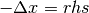

Using ODL with NumPy and SciPy¶
Numpy is the ubiquitous library for array computations in Python, and is used by almost all major numerical packages. It provides optimized Array objects that allow efficient storage of large arrays. It also provides several optimized algorithms for many of the functions used in numerical programming, such as taking the cosine or adding two arrays.
SciPy is a library built on top of NumPy providing more advanced algorithms such as linear solvers, statistics, signal and image processing etc.
Many operations are more naturally performed using NumPy/SciPy than with ODL, and with that in mind ODL has been designed so that interfacing with them is as easy and fast as possible.
Casting vectors to and from arrays¶
ODL vectors are stored in an abstract way, enabling storage on the CPU, GPU, or perhaps on a cluster on the other side of the world. This allows algorithms to be written in a generalized and storage-agnostic manner. Still, it is often convenient to be able to access the data and look at it, perhaps to initialize a vector, or to call an external function.
To cast a NumPy array to an element of an ODL vector space, you simply need to call the LinearSpace.element method in an appropriate space:
>>> r3 = odl.rn(3)
>>> arr = np.array([1, 2, 3])
>>> x = r3.element(arr)
If the data type and storage methods allow it, the element simply wraps the underlying array using a view:
>>> float_arr = np.array([1.0, 2.0, 3.0])
>>> x = r3.element(float_arr)
>>> x.data is float_arr
True
Casting ODL vector space elements to NumPy arrays can be done in two ways, either through the member function NtuplesBaseVector.asarray, or using numpy.asarray. These are both optimized and if possible return a view:
>>> x.asarray()
array([ 1., 2., 3.])
>>> np.asarray(x)
array([ 1., 2., 3.])
These methods work with any ODL object represented by an array. For example, in discretizations, a two-dimensional array can be used:
>>> space = odl.uniform_discr([0, 0], [1, 1], [3, 3])
>>> arr = np.array([[1, 2, 3],
... [4, 5, 6],
... [7, 8, 9]])
>>> x = space.element(arr)
>>> x.asarray()
array([[ 1., 2., 3.],
[ 4., 5., 6.],
[ 7., 8., 9.]])
Using ODL vectors with NumPy functions¶
A very convenient feature of ODL is its seamless interaction with NumPy functions. For universal functions (ufuncs) this is supported both via method of the ODL object and by direct application of the NumPy functions. For example, using NumPy:
>>> r3 = odl.rn(3)
>>> x = r3.element([1, 2, 3])
>>> np.negative(x)
rn(3).element([-1.0, -2.0, -3.0])
This method always uses the NumPy implementation, which can involve overhead in case the data is not stored in a CPU space. To always enable optimized code, users can call the member NtuplesBaseVector.ufunc:
>>> x.ufuncs.negative()
rn(3).element([-1.0, -2.0, -3.0])
For other arbitrary functions, ODL vector space elements are generally accepted as input, but the output is often of numpy.ndarray type:
>>> np.convolve(x, x, mode='same')
array([ 4., 10., 12.])
Implementation notes¶
The fact that the x.ufuncs.negative() interface is needed is a known issue with NumPy and a fix is underway. As of April 2016, this is not yet available.
NumPy functions as Operators¶
To solve the above issue, it is often useful to write an Operator wrapping NumPy functions, thus allowing full access to the ODL ecosystem. To wrap the convolution operation, you could write a new class:
>>> class MyConvolution(odl.Operator):
... """Operator for convolving with a given vector."""
...
... def __init__(self, vector):
... """Initialize the convolution."""
... self.vector = vector
...
... # Initialize operator base class.
... # This operator maps from the space of vector to the same space and is linear
... odl.Operator.__init__(self, domain=vector.space, range=vector.space,
... linear=True)
...
... def _call(self, x):
... # The output of an Operator is automatically cast to an ODL vector
... return np.convolve(x, self.vector, mode='same')
This could then be called as an ODL Operator:
>>> op = MyConvolution(x)
>>> op(x)
rn(3).element([4.0, 10.0, 12.0])
Since this is an ODL Operator, it can be used with any of the ODL functionalities such as multiplication with scalar, composition, etc:
>>> scaled_op = 2 * op # scale by scalar
>>> scaled_op(x)
rn(3).element([8.0, 20.0, 24.0])
>>> y = r3.element([1, 1, 1])
>>> inner_product_op = odl.InnerProductOperator(y)
>>> composed_op = inner_product_op * op # create composition with inner product with vector [1, 1, 1]
>>> composed_op(x)
26.0
For more information on ODL Operators, how to implement them and their features, see the guide on Operators.
Using ODL with SciPy linear solvers¶
SciPy includes a series of very competent solvers that may be useful in solving some linear problems. If you have invested some effort into writing an ODL operator, or perhaps wish to use a pre-existing operator then the function as_scipy_operator creates a Python object that can be used in SciPy’s linear solvers. Here is a simple example of solving Poisson’s equation equation on an interval ():
>>> space = odl.uniform_discr(0, 1, 5)
>>> op = -odl.Laplacian(space)
>>> rhs = space.element(lambda x: (x>0.4) & (x<0.6)) # indicator function on [0.4, 0.6]
>>> result, status = scipy.sparse.linalg.cg(odl.as_scipy_operator(op), rhs)
>>> result
array([ 0.02, 0.04, 0.06, 0.04, 0.02])